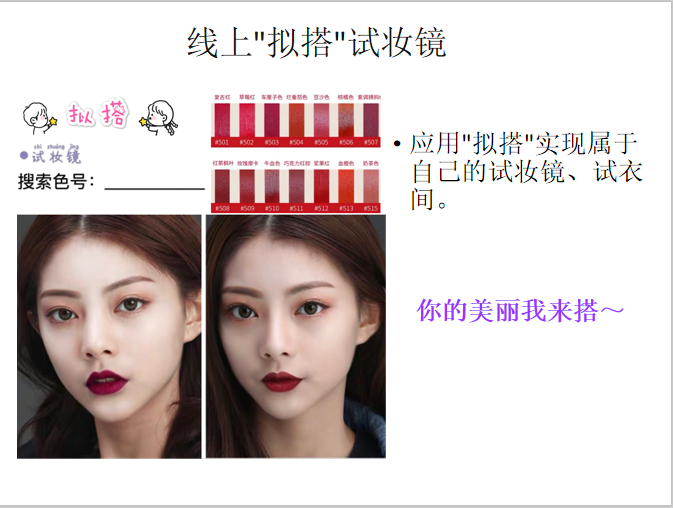

团队队长：王彪
团队队员：李碧云、甘凯悦、黄振强、邹升立、许裕文
随着中国经济快速发展，人们收入水平和生活水平的不断提高， 必然增加更多的消费需求，而人们对消费
需求的满足会通过购物来实现， 商品对购物起着越来越重要的作用，人们在对商品选购的同时会出现多种 心理
为商品的选择而纠结、犹豫，从而无形的耗费了人们的时间和精力。 并且，通过我们团队的调查显示，购物中大
部分的消费者为女性，并且对化妆品和衣服的选购占比更重，消费者对商品购买不论是线上还是线下都会出现对商
品购买后满意度不是很高的情况，则此时退货量则会增加，商家和消费者二者的利益同时都没有得到实现。
为此，本项目旨在利用互联网科学技术去创新出去减少人们在对琳琅满目的商品选购时的多种心理，即尽可能的
为人们在商品选择时的犹豫纠结做出的的一种更迅速更好的决定，退货量从而进一步的减少，对商家的亏损则是得到
了一定的治理对策，收益更是增加，也使得人们选购的时间和精力实现了对自身有益，商家和消费者二者利益相互共生。
本项目产品是一个名为"拟搭"的app，利用这个app可以实现对消费者和商家权益进一步的共同保障，逐步提升其知名度、美誉度,甚至忠诚度。
1.产品设计："拟搭"将"试衣间➕试妆镜"的功能来给消费者在选购时实现服装、配饰、化妆品的快速取用，便捷试用。线上采用拟搭app与"淘宝、
唯品会、蘑菇街"等购物平台共同合作，构建起一个专属于个人可无限制使用的"试衣间➕试妆镜"，同时也会在各种直播平台主播间配有此功能给观看
者试用主播妆容或穿搭等。线下将在各个店中由"拟搭"打造出的电子镜中输入店内化妆品型号和服装编号、配饰编号等，可为顾客试用时输入编号等即
可直接在电子镜中快速试用。
2.材料及使用特点：线上推出"拟搭"app,在各个购物或直播平台中可为自己而享用。线下打造"拟搭"电子镜，电子镜像素精准度高、性能与响应
速度双高，只需指尖一触，方可快速试用。"拟搭"无论是线上线下高清增强现实感，试用便捷且省时。
3.产品功能：一 是线上在各个购物软件附上"拟搭"功能，即加入一个属于自己个人线上的"试衣间➕试妆镜"，为每个人选购服装、配饰、化妆品
提供一个可为自己搭配的功能。二是线下在各个购物商场和一些衣服、化妆品品牌店中提供"拟搭"的实体使用，将实体电子镜打造成"试衣间""试妆镜"，
减少了店面空间，以及减少人们购物时的试用时间，而不在像传统的排队试用耗费大家的时间，让人们的选购时间变得更加充足而有利。
4.预测产品后期：在"拟搭"app线上线下都将会加入类比苹果siri更强大的语音功能，可进行语音服务获取要试用的商品。自动对每次搭配进行快
速分类，如"此搭配显清新风(可爱风，成熟风等)"，并且推出各种拟搭风格的分类让试用者进行个人喜欢风格的推荐查看。
